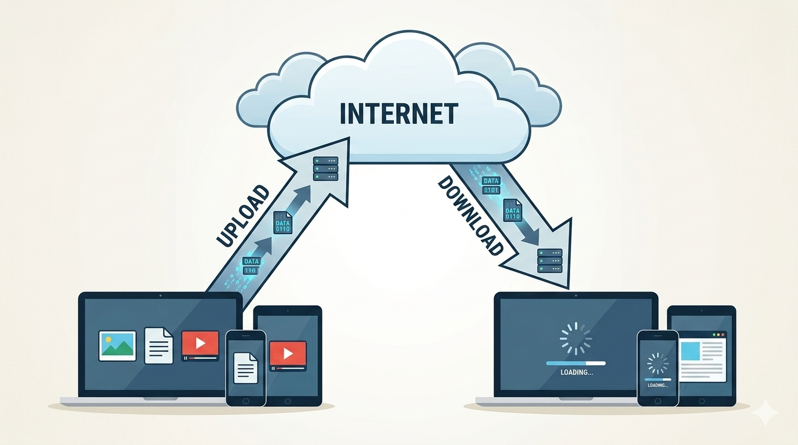
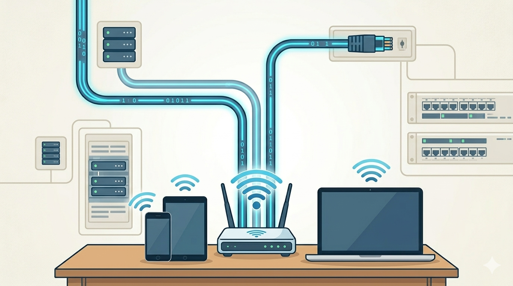
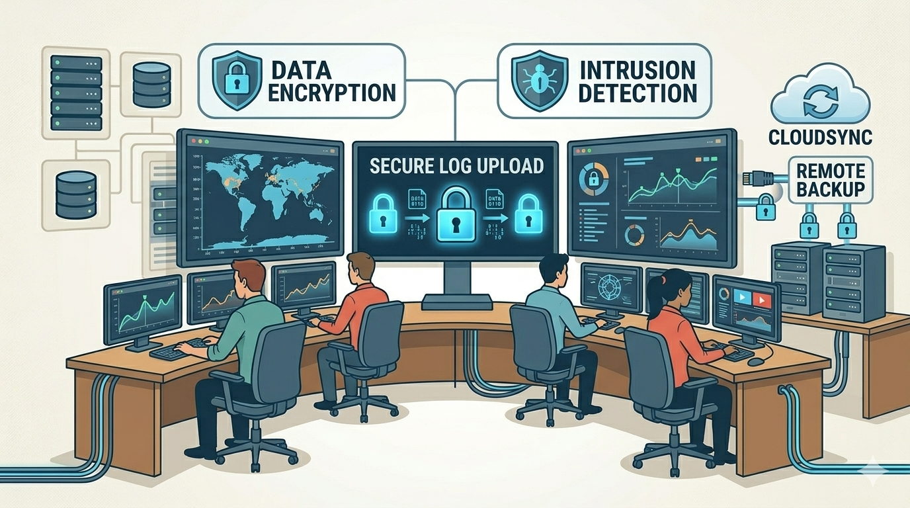

Concepto de descarga y subida de datos
En esta primera parte presento visualmente cómo funciona el flujo de información en internet. Es un proceso de ida y vuelta que ocurre cada vez que nos conectamos a la red desde cualquier dispositivo.

¿De qué hablamos cuando decimos subir o bajar datos?
Hoy en día damos por sentado que al hacer un clic todo aparece de inmediato, pero detrás de eso hay un movimiento constante de paquetes de información. Básicamente, la descarga y la subida son las dos direcciones en las que viajan los datos por el "túnel" de nuestra conexión a internet. Si estamos viendo este sitio web, nuestro computador está descargando código, imágenes y estilos desde un servidor lejano. Si enviamos un mensaje, estamos subiendo esa información.
¿Por qué es algo tan importante? Bueno, porque define nuestra experiencia digital. No es lo mismo alguien que solo usa internet para leer noticias que alguien que crea contenido, hace directos o trabaja con archivos muy pesados. Entender esto nos ayuda a saber qué tipo de servicio necesitamos realmente en nuestra casa o trabajo. A veces nos venden "muchos megas", pero si la velocidad de subida es mala, no podremos ni siquiera subir una tarea a tiempo o tener una videollamada sin que se trabe la imagen. En resumen, es el motor que mueve nuestra vida digital y saber cómo funciona nos da una ventaja técnica clara.
Conceptos técnicos y funcionamiento
Para no quedarnos solo en la superficie, hay que mencionar que este flujo de datos se mide en bits por segundo. Normalmente hablamos de Mbps (Megabits por segundo). Un punto clave aquí es que la mayoría de nosotros tenemos conexiones asimétricas; es decir, descargamos mucho más rápido de lo que podemos subir. Esto pasa porque las empresas asumen que consumimos más de lo que creamos.
- La Descarga (Download): Es bajar cosas de la red. Es lo que usamos para ver series en 4K, escuchar música o simplemente abrir el correo. Si esta velocidad falla, el video se queda cargando con el famoso círculo de espera.
- La Subida (Upload): Es poner cosas en la red. Es vital para mandar correos con archivos adjuntos, publicar en Instagram o guardar fotos en la nube. Antes no le dábamos importancia, pero ahora es fundamental.
- El Ancho de Banda: Es como el carril de una carretera. Si el carril es ancho, pasan muchos datos. Si es angosto, se arma un trancón digital.
- Latencia: Es el tiempo de respuesta. Si tienes buena velocidad pero mala latencia (ping alto), sentirás que el internet "no reacciona" rápido.
Tabla Comparativa de Procesos
| Punto de comparación | Descarga de datos | Subida de datos |
|---|---|---|
| Sentido | Hacia el usuario | Hacia el servidor |
| Uso común | Streaming, navegar, Netflix | Postear, mandar mails, backups |
| Prioridad estándar | Muy alta en hogares | Alta en entornos de trabajo |
| Problema típico | Corte en el video | Error al enviar archivo |
Hay que tener en cuenta que la tecnología de conexión influye mucho. No es igual el cable de cobre viejo que la fibra óptica moderna. Con la fibra, muchas veces podemos tener velocidades simétricas, lo que significa que subes datos tan rápido como los bajas. Esto es el paraíso para cualquiera que trabaje en multimedial o tecnología.

Casos reales y ejemplos del día a día
Vamos a ponerlo en práctica. Imagina que eres un creador de contenido. Grabas un video en alta definición que pesa 2 gigas. Para que el mundo lo vea, tienes que "subirlo" a una plataforma. Si tu internet tiene una subida pobre, podrías estar toda la noche esperando a que termine. En cambio, tus seguidores, para ver ese video, necesitan una buena "descarga" para no tener que esperar a que cargue el buffer.
Otro caso son los videojuegos. Aquí no importa tanto cuántos megas tienes, sino la estabilidad de ambos caminos. Tu juego descarga la posición de los otros jugadores y sube tus movimientos. Si uno de los dos procesos es lento, aparece el "lag" y pierdes la partida. En el mundo profesional, las empresas hacen copias de seguridad de sus bases de datos todas las noches; ese es un proceso de subida masivo que debe ser rápido para no interferir con las labores del día siguiente.
También está el caso de la medicina a distancia o las cirugías remotas, donde la subida de datos de video en tiempo real debe ser perfecta. Un retraso de un segundo podría ser un desastre. Esto nos muestra que estos conceptos no son solo para entretenimiento, sino que sostienen servicios vitales de la sociedad actual.

Conclusiones e importancia actual
Para cerrar, creo que lo más importante es entender que la brecha digital también se mide en la calidad de estos flujos. En la industria tecnológica de hoy, quien tiene mejor capacidad de subida y descarga es más productivo. Ya no basta con estar conectados; hay que estar bien conectados. La evolución hacia el 5G y la fibra óptica busca que estas barreras desaparezcan y que mover datos sea algo tan natural como respirar.
Como idea clave, me quedo con que la simetría de datos será el estándar del futuro. Los usuarios dejamos de ser simples espectadores para ser creadores, y para eso necesitamos que el camino de ida (subida) sea igual de potente que el de vuelta (descarga). Dominar estos conceptos es la base para cualquier persona que quiera trabajar en el mundo digital.